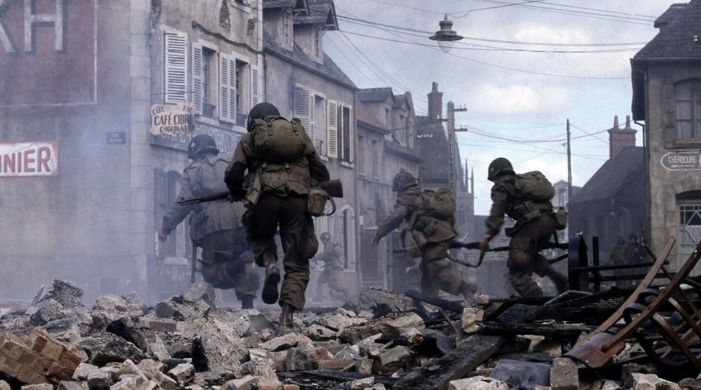

🎖️ ¿De qué va, en concreto?
Sigue a estos soldados desde su entrenamiento en EE.UU. hasta el final de la guerra en Europa. Pero no es solo “acción bélica”, va mucho más profundo: Empieza con el entrenamiento duro y la disciplina militar Continúa con el desembarco en Normandía (Día D) Muestra combates en Francia, Holanda y Bélgica (como la Batalla de las Ardenas) Termina con la llegada a Alemania y el descubrimiento de los campos de concentración 🧠 Lo importante (más allá de la guerra) La serie no se centra tanto en la guerra como espectáculo, sino en: La hermandad entre los soldados El liderazgo (especialmente el de Richard Winters) El miedo, el cansancio y el trauma Cómo cambia una persona al vivir todo eso Cada episodio suele enfocarse en un personaje distinto, lo que hace que los conozcas de forma más íntima. 🎬 Tono y estilo Realista, crudo, sin glorificar la guerra Visualmente muy cinematográfica (heredera de Saving Private Ryan) Bastante emocional, incluso melancólica en varios momentos